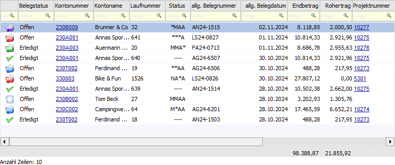
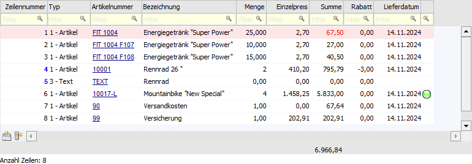

In dem Bereich "Beleganzeige" werden alle der Selektion entsprechenden Belege, unterteilt nach Belegkopf- und Belegmittelteilsinformationen, detailliert aufgelistet.

Tabelle "Belegkopf"

In der Tabelle "Belegkopf" werden alle Belege gemäß der zuvor getroffenen Selektion angezeigt. Durch Anwahl eines Beleges wird die Tabelle "Belegmitte" gefüllt. Handelt es sich um den Matchcode, so kann die Übernahme eines Belegs in das Ausgangsfenster per Doppelklick oder Enter-Taste erfolgen.
Hinweis
Die in der Tabelle dargestellten Standard-Spalten können über das Kontextmenü der rechten Maustaste (Funktion "Spalten anzeigen / verstecken") jederzeit ergänzt bzw. verändert werden. Die Inhalte z.B. der Spalten "Endbetrag" und "Rohertrag" werden hierbei erst dargestellt, wenn die jeweilige Spalte vor der Beleganzeige im Aufbau vorhanden ist.
Ø Belege parken (rechte Maustaste)
Bei Belegen des Typs "Angebot / Anfrage" oder "nicht gerechnet / gedruckt" steht die Funktion "Beleg parken" zur Verfügung. Hiermit wird der Beleg in das Fenster "Zuletzt bearbeitete Belege" übergeben.
Hinweis
Diese Funktion steht im "Belege - Matchcode" nicht zur Verfügung.
Ø Übernehmen (nur "Belege - Matchcode")
Der Button "Übernehmen" steht nur zur Verfügung, wenn der Matchcode im Fenster "Belege splitten" bzw. "Mehrfache Belegaufteilung" aufgerufen wurde. Mit dessen Hilfe können mehrere markierte Belege in das Fenster "Belege splitten" bzw. "Mehrfache Belegaufteilung" übernommen werden.
Tabelle "Belegmitte"

In der Tabelle "Belegmitte" werden die Belegzeilen des aktuell markierten Belegs (Tabelle "Belegkopf") angezeigt. Folgende Punkte sind hierbei zu beachten:
ü Es werden im Standard nur Belegzeilen des Typs "Artikel", "Text", "Gutschrift" und "Nebenkosten" angezeigt. Diese Einschränkung kann mit Hilfe des Tabellenbuttons "alle Typen anzeigen" aufgehoben werden.
ü Durch einen Doppelklick auf eine Artikelzeile (Ausnahme "Artikelnummer" und "Lagerort") wird ein Quickfilter ausgelöst. D.h. es werden nur noch Belege angezeigt, welche diesen Artikel in sich tragen. Durch Anwahl des Buttons "Einschränkungen aufheben" kann der Quickfilter wieder entfernt werden.
ü Handelt es sich um eine Belegzeile, welche als "alternativ" gekennzeichnet ist und somit nicht in die Endsumme einfließt, so wird der Wert der Spalten "Summe" und "Summe (original)" in Dunkelrot dargestellt.
ü Handelt es sich um Belegzeilen des Typs "1 - Artikel", welche nicht in die Endsumme fließend, so wird der Wert der Spalten "Summe" und "Summe (original)" in Rot dargestellt.
ü Durch einen Doppelklick auf die Lagerort-Kugel einer Belegzeile wird das Fenster "Lagerorten anzeigen" geöffnet. In diesem werden die erfassten Lagerorte der Belegzeile dargestellt.
ü Es können Belegzeilen per Drag & Drop in geöffnete Belegerfassungen, sowie in das Bestellvorschlag bearbeiten, kopiert werden. Handelt es sich um den Matchcode, so muss dieser aus der Belegerfassung oder dem Menüpunkt "Barrechnung" heraus geöffnet worden sein.
Hinweis
Die in der Tabelle dargestellten Standard-Spalten können über das Kontextmenü der rechten Maustaste (Funktion "Spalten anzeigen / verstecken") jederzeit ergänzt bzw. verändert werden.
Tabellenbuttons

Ø Belegzeilen kopieren
Durch Anwahl des Buttons "Belegzeilen kopieren" werden die markierten Belegzeilen in den Zwischenspeichern gelegt und stehen in der Belegerfassung, sowie dem Bestellvorschlag bearbeiten, zum Einfügen zur Verfügung (Tabellenbutton "Belegzeilen einfügen").
Hinweis
Handelt es sich um den "Belege - Matchcode", so steht das Kopieren nur zur Verfügung, wenn dieser aus der Belegerfassung oder dem Menüpunkt "Barrechnungen" heraus geöffnet wurde.
Ø alle Typen anzeigen
Es werden im Standard nur Belegzeilen des Typs "Artikel", "Text", "Gutschrift" und "Nebenkosten" in der Tabelle "Belegmitte" angezeigt. Diese Einschränkung kann durch Anwahl des Tabellenbuttons "alle Typen anzeigen" aufgehoben werden, wobei durch nochmaliges Anklicken des Buttons die Beschränkung wieder gilt. Hierbei wird die zuletzt getroffene Einstellung benutzerspezifisch gespeichert.
Ø beschleunigte Anzeige (nur "Belege - Matchcode")
Für eine noch schnellere Aufbereitung der Tabelle "Belegmitte" kann die beschleunigte Anzeige aktiviert werden. Dadurch werden die folgenden Informationen nicht mehr geladen:
ü farbliche Kennzeichnung von Zwischenartikeln
ü Spalte "Lagerort"
ü Spalte "Kontrakt bestellt"
ü Spalte "Kontrakt geliefert"
ü Spalte "Kontrakt geliefert"
ü Spalte "Kontrakt fakturiert
ü Spalte "Kontraktstatus"
Hinweis
Der Button steht nur zur Verfügung, wenn im "Beleg - Matchcode" generell mit der beschleunigten Anzeige gearbeitet wird (siehe Belege / Belege-Matchcode - Einstellungen - Register "Belege - Matchcode").
Ø Ausgabe Excel
Durch Anwahl des Buttons "Ausgabe Excel" wird der Inhalt der Tabelle an Microsoft Excel übergeben.
Ø Tabelleneinstellungen speichern
Die Spalten einer Tabelle können grundsätzlich an beliebige Positionen verschoben, bzw. in der Breite entsprechend angepasst werden. Durch Anwahl des Buttons "Tabelleneinstellungen speichern" werden die Einstellungen benutzerspezifisch gespeichert und bei dem nächsten Aufruf des Programmpunktes wieder vorgeschlagen.
Ø Gesamteinstellungen speichern
Im Gegensatz zu "Tabelleneinstellungen speichern" können mit "Gesamteinstellungen speichern" mehrere Tabellenaufbauten gespeichert und nach Wunsch geladen werden. Zusätzlich werden Sonderfunktionen der Tabelle (z.B. "Spalte gruppieren") ebenfalls bei der Speicherung bedacht.